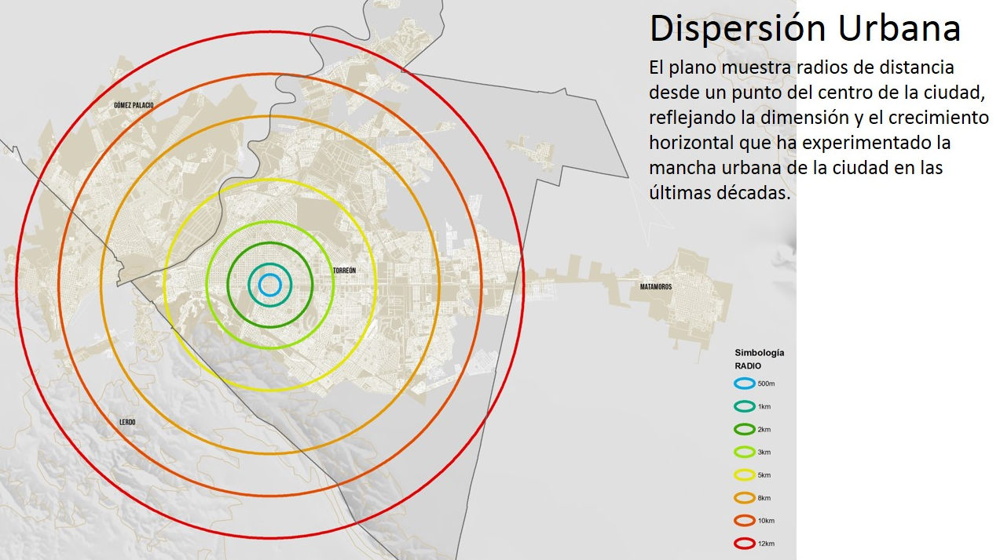

Una ciudad bien planeada promueve la inclusión social, la resilencia y la prosperidad. Ofrece a sus residentes la oportunidad de llevar vidas seguras, saludables y productivas, es decir, una mejor calidad de vida.
Cuando una ciudad se expande, se vuelve cada vez más compleja de administrar, el costo per cápita de los gobiernos locales por operar las redes de infraestructura y servicios públicos, se incrementará en la medida que la densidad habitacional disminuya. Para la población, vivir y transportarse desde las periferias urbanas, podría llegar a representar un gasto acumulado del 40% del ingreso familiar.
Resulta evidente, que las ciudades que necesitamos no pueden seguir creciendo con el modelo urbano actual. El cambio hacia un nuevo modelo de desarrollo urbano requiere, entre otros factores, de la transformación profunda del marco legal, institucional y de planeación a largo plazo.
ONU-Habitat reconoce que los sistemas jurídicos, representan el mayor obstáculo que impide a los gobiernos dar solución a los desafíos actuales de las ciudades.
En respuesta al gran reto que representan los marcos normativos del sector urbano para las ciudades mexicanas. La aprobación del Reglamento de Desarrollo Urbano, Zonificación, Uso de Suelo y Construcciones para el Municipio de Torreón, significa un primer esfuerzo por contar con un instrumento jurídico que responda a las problemáticas, tendencias y nuevos desafíos de la ciudad.
El reglamento fue discutido y elaborado por la misma ciudadanía. La socialización del marco jurídico se realizó mediante una plataforma en línea, la cual permitía modificaciones directas al documento por cualquier persona. Además, se realizaron visitas y reuniones con las camaras empresariales, colegios de profesionistas, organismos del sector urbano y funcionarios públicos. Como resultado de la socialización se recibieron más de 590 propuestas, comentarios y observaciones, mismos que fueron evaluados y analizados.
El reglamento incorpora nuevos conceptos urbanísticos, refuerza los existentes y es congruente con los lineamientos establecidos por el Plan Director de Desarrollo Urbano. A continuación se engloban los temas prioritarios:
Fortalecer los instrumentos y procedimientos de planeación a corto, mediano y largo plazo
El reglamento es congruente con el Plan Director de Desarrollo Urbano y establece mecanismos para fortalecerlo. Las modificaciones que excedan el 30% en los lineamientos, densidades y coeficientes serán revisadas por el IMPLAN y se tomarán en cuenta al momento de la actualización integral del plan. Los cambios de uso de suelo deberán ser presentados a través de un polígono de actuación.
Los polígonos de actuación se proponen como un instrumento que permite la planeación integral de sectores específicos de la ciudad, de manera que se puedan incorporar acciones a corto, mediano y largo plazo. La ejecución de las acciones urbanas establecidas en los polígonos de actuación se podrán llevar a cabo mediante la participación privada, social o por cooperación. Cada polígono deberá estar justificado mediante los procedimientos que se mencionan en el reglamento.
Fomentar y proteger los espacios públicos
El reglamento incluye un capítulo destinado específicamente a la planeación, gestión y defensa de los espacios públicos. Promueve la equidad en su uso y disfrute. Asegura la accesibilidad y libre circulación. Se establecen mecanismos para ocupar los espacios públicos de manera temporal. Privilegia la preservación del espacio público para el tránsito de peatones y biciletas con normas técnicas para el deseño de ciclovías. Incluye normas técnicas para la instalación del mobiliario urbano.
Priorizar la movilidad no motorizada y la accesibilidad universal
La movilidad urbana sustentable es de gran trascendencia, representa la intención de promover ciudades a escala humana, orientadas al peatón y al ciclista. El reglamento integra el concepto de calles completas como alternativa de movilidad.
La accesibilidad universal cuenta con un capítulo específico de normas técnicas para garantizar los derechos de las personas con discapacidad.
Reducir el impacto urbano generado por riesgos naturales y físicos
El capítulo de riesgos del reglamento tiene como finalidad reducir siniestros y riesgos en la realización de cualquier tipo de fraccionamientos, urbanizaciones y construcciones que pudieran afectar la integridad de las personas.
Además, se propone que toda nueva construcción o fraccionamiento deberá contribuir a las obras para el manejo integral de aguas pluviales de la ciudad, con la finalidad de mitigar los efectos causados por las precipitaciones.
Promover la participación ciudadana en la toma de decisiones para el desarrollo urbano
La participación ciudadana en la toma de decisiones para el desarrollo urbano, se ordena a tavés de los diferentes órganos de consulta y apoyo técnico.
La denuncia de cualquier acción urbana que contravenga lo dispuesto en las leyes, planes, programas y reglamentos podrá denunciarse por parte de cualquier persona.
La figura del IMPLAN se incorpora con la finalidad de proponer al ayuntamiento los planes y programas a seguir a corto, mediano y largo plazo en materia de planeación urbana, mediante la consulta a las diferentes dependencias y entidades, así como a las organizaciones de la sociedad civil y personas físicas o morales a través de esquemas participativos.
El reglamento de Desarrollo Urbano, Zonificación, Uso de Suelo y Construcciones para el municipio de Torreón cuenta con avances significativos en la planeación y regulación del ordenamiento territorial y del desarrollo urbano. Integra diferentes propuestas que se plantean para la Reforma Urbana a nivel nacional y que representarán un impacto en la calidad de vida.
Dispersión Urbana
